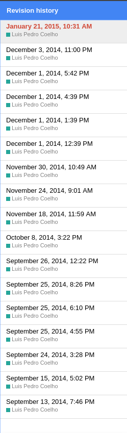

class: center, middle # Introduction to Git & Github --- # Git is hard to teach - Git is _flexible_ supporting many **different workflows** - The commands have non-intuitive names and options - The benefits are long term: You probably would not use version control for an analysis that lasts two hours. <img src="https://upload.wikimedia.org/wikipedia/commons/2/2d/Set_of_security_screw_driver_bits.jpg" style="width:60%; text-align:center"> --- ## So, my request: Suspend your skepticism until the break (1½hours) and then we can come back to it. --- # What problems does version control solve? <div class="center"> <img src="figures/phd101212s.png" style="width:40%" /> </div> "Piled Higher and Deeper" by Jorge Cham, http://www.phdcomics.com --- # Why use version control?  - Making collaboration easier than "pass the baton" - Traveling back in time to earlier versions of the project. The issues above are also solved by Word "Track Changes", Google Docs automatic revisions, or Dropbox's history. There are some coding equivalents as well ([Cloud 9](https://c9.io/)). --- # What is harder to do with Dropbox and friends - Allowing you to try things that can easily be rolled back. - Keeping a version of record. - Keeping separate branches. ### Where to use version control - Code. Version control was made for code. - Manuscripts - Everything Text-based files have built-in support, other types of files can also be used. --- # Diffing The reason why git works so well with text is because of _diff_ ing: -- ```bash $ cat file1.txt first line second line $ cat file2.txt first line third line $ diff -u file1.txt file2.txt --- file1.txt 2016-09-18 16:47:43.000415047 +0200 +++ file2.txt 2016-09-18 16:47:49.203562118 +0200 @@ -1,2 +1,2 @@ first line -second line +third line ``` -- We will see that we can also _diff_ images and other types of texts, but requires some set up. --- # Git's model - Works on a directory and all its subdirectories. -- If we didn't have git, we could make a _poor man's git_ in the following way: - We take a directory for our project `project`. - Every once in a while, we make a whole copy of the directory: -- 1. `project_first_version_2016_08_22_8:14` 2. `project_added_data_2016_08_22_11:27` 3. `project_import_data_into_numpy_2016_08_22_15:22` 4. `project_basic_stats_2016_08_22_17:01` 5. `project_normalization_2016_08_23_9:53` 6. ... -- **If you were very disciplined**, this would actually work. You could then use diff to compare versions. --- # Poor man's git  This poor man's git is not so different from the git model. --- # Exploring GitHub Github is git + bells & whistles [https://github.com/tobyhodges/ITPP](https://github.com/tobyhodges/ITPP) Let's look at - History - Diffs For example, [this diff](https://github.com/tobyhodges/ITPP/commit/7f765f1bd4149ba12d7927fa5bc0cfac68ba1f78) --- # Using git: step 0 ```bash $ git config --global user.name "YOUR NAME" $ git config --global user.email "YOUR EMAIL (IF YOU WANT)" $ git config --global color.ui "auto" $ git config --global core.editor "nano -w" ``` If you want another editor, naturally, you can set it there (including GUI editors). --- # Using git: step 1 ```bash $ git clone https://github.com/tobyhodges/ITPP/ Cloning into 'ITPP'... remote: Counting objects: 459, done. remote: Total 459 (delta 0), reused 0 (delta 0), pack-reused 459 Receiving objects: 100% (459/459), 2.88 MiB | 474.00 KiB/s, done. Resolving deltas: 100% (257/257), done. Checking connectivity... done. ``` Git now _cloned_ the repository from github to a directory called `ITPP`. Your copy is now **independent** of the original. --- # Explore the cloned directory. Let's explore the directory a bit: ```bash $ cd ITPP $ ls ``` --- # Looking at the history ```bash $ git log ... ``` Same information as on the github website: - Author - Date - Comment - Funny IDs --- # Remember the "poor man's git"? What we have here is 1. the `project` directory (ITPP in this case) 2. inside a special `.git` folder, git is saving all the previous versions. ```bash $ git diff 28c80e7299977392a3be6b00ad5be71cf3f46f8a ... ``` You can also use dates if you really want ```bash $ git diff '@{2016-09-01 18:30:00}' ``` (This is just another example of git's flexibility over learnability). --- # Going back in time If you have a course that you taught several times, it's sometimes nice again "the version I taught in September 2016"? ```bash $ ls .ipynb_checkpoints ls: cannot access '.ipynb_checkpoints': No such file or directory $ git checkout 28c80e7299977392a3be6b00ad5be71cf3f46f8a Note: checking out '28c80e7299977392a3be6b00ad5be71cf3f46f8a'. You are in 'detached HEAD' state. You can look around, make experimental changes and commit them, and you can discard any commits you make in this state without impacting any branches by performing another checkout. If you want to create a new branch to retain commits you create, you may do so (now or later) by using -b with the checkout command again. Example: git checkout -b <new-branch-name> HEAD is now at 28c80e7... merged Karin's changes to WS2 debugging exercise $ ls .ipynb_checkpoints 2_BeginningProgramming-checkpoint.ipynb 3_InputAndOutputMPL-checkpoint.ipynb ``` --- # GUI Version ```bash $ git-cola dag ``` You can do everything from `git-cola`, but I will use the command line version as it's still the _least common denominator_. --- # Making some changes 1. Let us go back to the latest version (which is called `master` by default): ```bash $ git checkout master ``` 2. Check the status ```bash $ git status On branch master Your branch is up-to-date with 'origin/master'. nothing to commit, working directory clean ``` 3. Now, we make some changes ```bash $ nano README.md ... $ git status On branch master Your branch is up-to-date with 'origin/master'. Changes not staged for commit: (use "git add <file>..." to update what will be committed) (use "git checkout -- <file>..." to discard changes in working directory) modified: README.md no changes added to commit (use "git add" and/or "git commit -a") ``` --- # Git diff ```bash $ git diff diff --git a/README.md b/README.md index 3908015..015fcd9 100644 --- a/README.md +++ b/README.md @@ -1,4 +1,7 @@ ## Introduction to Python Programming + +These are the materials used in the software carpentry course. + ###### Materials for a course providing an introduction to programming in Python. __Click the button below to launch the course materials in an interactive environment, thanks to the [Binder](http://mybinder.org) service from [The Freeman Lab](http://thefreemanlab.com).__ (Current build of Binder materials: 07-Apr-2016) ``` --- # Committing the changes ```bash $ git add README.md $ git status On branch master Your branch is up-to-date with 'origin/master'. Changes to be committed: (use "git reset HEAD <file>..." to unstage) modified: README.md $ git commit ... ``` --- # Staging The "staging area" (aka. as "index") is another feature where git chose power over learnability.  (From [git book](https://git-scm.com/book/en/v2/Getting-Started-Git-Basics).) --- # Commiting ```bash $ git commit ... ``` Write your commit message. -- ## What are the advantages doing two steps (`add` and `commit`)? - You can select bits and pieces to commit (even just parts of files) - You can review your changes one last time (`git diff --staged`) --- # Git commit options Specifying the message inline ```bash $ git commit -m "My commit message" ``` A good commit message will have a single, short, one line summary at the top, then a blank line, then a longer explanation: ``` New analysis: diversity/temperature association Plot the relationship between the diversity of a sample and the temperature of the site. As part of this commit, simplify the data loading code. ``` --- # Git blame Have you ever looked at some code and asked "why would anybody do something like this??" -- ```bash $ git blame ``` This is really only possible with text files. --- # Commit IDs We have seen these bizarre commit-ids (e.g., `28c80e7299977392a3be6b00ad5be71cf3f46f8a`) show up in the log. We can add a tag to a commit for convenience ```bash $ git tag v1.0 ``` Some names are magic - `HEAD` is what we currently checked out. - `HEAD~1` is the previous commit - `master` is the most up to date commit. ---  --- # Throwing away changes ```bash $ nano README.md ... $ git diff ... ``` Imagine we do not like these changes. What do we do? ```bash $ git checkout HEAD README.md ``` This checks out from `HEAD` only the file `README.md`. -- **This is one of the few irreversible operations in git**. **It's also _very useful_.** - Let me check if this code is faster/better? If not, throw it away. - Let me add some `print` statements to this code. When I found the bug, throw the `print`s away. - Ooops, did I delete/overwrite some files I should not have? Get them back. --- # Let's take a breath We have seen - `git clone`: we got a copy of the whole repository (including history) - `git log`: a list of commits (which we also saw on github) - `git checkout COMMIT_ID`: going back & forward in history - `git add`/`git commit`: Adding new commits - `git tag`: add a tag to a commit -- What we have not seen: - how to start a git repository from scratch - how to use git for collaboration - branching and merging We will not discuss: - the other 99% of git options --- # Starting from the other side How do we *initialize* a new git repository? ```bash $ mkdir git-notes-luispedro $ cd git-notes-luispedro $ git init ``` This transforms the current directory into a git repository (i.e., add the `.git` directory and its magic files). ```bash $ ls ... $ ls -a ... $ git status ... ``` **Git init does not add any files to the repository.** --- # Adding files to our repository and committing. We have seen this before. ```bash $ nano basics.txt ... $ git add basics.txt $ git commit ... ``` --- # Starting with Github Please go to [github.com](https://github.com) and get a new user account.  Put up a green sticker once you have done so. --- # Pushing your changes to Github How do we tell git on our machine about this github thing? We need to introduce a new concept: "remotes". Fortunately, github is pretty good about helping out. -- ```bash $ git remote add origin https://github.com/luispedro/git-notes-luispedro $ git push -u origin master ... ``` We **add a remote** called _origin_ (just a convention) pointing to https://github.com/luispedro/git-notes-luispedro --- # Technical note on authentication Please type ```bash $ unset SSH_ASKPASS ``` and we will type out our username/password on the command line. -- This works but is not the best way to do it. There is a solution (SSH keys), but we will not cover it here. The github documentation explains it. --- # Collaborating with git I find git is even for single-user projects, but it becomes even more important when working with others. --- # Shared git repository  --- # Sharing a repository 1. Pair up 2. Pick one of you to be the administrator (_Alice_) 3. The administrator should add the other member of the group (_Bob_) as a collaborator to their repository 4. _Bob_ should now clone from _Alice_'s repository  Once you get here, please put up a green sticker. -- 5. _Bob_ should now change something in the repository, `git add`, `git commit`, and finally call `git push` -- 6. Check that github now shows the newer changes 7. _Alice_ can now `git pull` the changes from github  Once you get here, please put up a green sticker. --- # Merging & conflicts 1. _Alice_ clones from the repository (at version `X`) and makes a change (add a file named `alice.txt` describing your favorite food). 2. _Bob_ clones from the repository (at version `X`)and makes a change (add a file named `bob.txt` describing your favorite food). What happens when they want to push their changes back? -- Whoever pushes first will change the repository on github. ```bash $ git push ... OK ``` And the second person to push will get an error: ```bash $ git push To https://github.com/..... ! [rejected] master -> master (non-fast-forward) error: failed to push some refs to 'https://github.com/vlad/planets.git' hint: Updates were rejected because the tip of your current branch is behind hint: its remote counterpart. Merge the remote changes (e.g. 'git pull') hint: before pushing again. hint: See the 'Note about fast-forwards' in 'git push --help' for details. ``` --- # Merging & conflicts (II) ```bash $ git pull ... ``` git _merged the changes_ and built a new directory which contains *both* Alice and Bob's changes. -- This all happened locally (in Bob's computer). Bob can now push the merged changes to github: ```bash $ git push ``` -- and Alice can pull: ```bash $ git pull ``` Now, they are back in sync. --- # Conflicts What if git cannot merge? 1. _Alice_ edits `alice.txt` and `add`s, `commit`s and `push`es her changes. 2. _Bob_ edits `alice.txt` and `add`s, `commit`s and `push`es his changes (**after** Alice). _Bob_ will get the same non-fast-forward error and will try to `git pull` only to see a conflict message! -- ``` $ git pull [master 687aaf1] Bob's favorite drink 1 file changed, 1 insertion(+) create mode 100644 bob.txt luispedro@rabbit:/tmp/t/git-notes-luispedro §git pull remote: Counting objects: 3, done. remote: Compressing objects: 100% (2/2), done. remote: Total 3 (delta 0), reused 0 (delta 0) Unpacking objects: 100% (3/3), done. From /tmp/git-notes-luispedro 3f9cca8..262601a master -> origin/master Auto-merging bob.txt * CONFLICT (add/add): Merge conflict in bob.txt * Automatic merge failed; fix conflicts and then commit the result. ``` -- Don't panic. --- # Resolving conflicts Git is not magic. If it cannot merge, it will ask _Bob_ to fix it. ```bash $ git status On branch master Your branch and 'origin/master' have diverged, and have 1 and 1 different commit each, respectively. (use "git pull" to merge the remote branch into yours) You have unmerged paths. (fix conflicts and run "git commit") Unmerged paths: (use "git add <file>..." to mark resolution) both added: bob.txt ``` --- # You must manually fix the conflict (_Alice_ should now work with _Bob_) Edit `bob.txt`: ```bash $ nano bob.txt * <<<<<<< HEAD Bob likes mango lassi * ======= Bob likes gin & tonic * >>>>>>> 262601a49bdbc69f1dc65a558f80b97975f6f896 ``` -- ```bash $ git add bob.txt $ git commit $ git push ``` Now look at how the repository looks like on github. See `Graphs` tab and then `Network`.  Put up a green sticker once you have done so. --- # Pull requests (PR) Git is extremely flexible and supports different workflows/code management styles: 1. **Centralized**: a single master repository which people clone from/push to. 2. **Pull request**: only some users can commit to the main repository, others submit changes for approval (pull requests). Note that git itself does not care about any of this: it's all "human level".  --- # The PR model The pull request model (in general): 1. I publish my repository 2. You make your changes publicly available 3. You ask (request) that I **pull** from your repository You can do this the old fashioned way, with email, but it's much easier with github. -- 4. _Alice_ should _fork_ _Bob_'s repository on github. 5. _Alice_ should clone from **her fork** to her computer. --- # Mixed centralized/pull request model You can mix centralized and PR management in the same project. -- It sounds very abstract, but here is a realistic situation where it is _very natural_ to have a mixed centralized/PR model: > You start a project with your lab mates and put it on github. Since it's just > 3 of you, you work in the centralized model, using a lab github page as the > centre. > > Later, you make the repository public and others start forking and submitting > PRs. > > Your small team (the core developers) may still prefer to work in the > centralized model, but you might not want to give others on the outside > access. Probably **most open source software** works like this. --- # Breakpoint Let's review: What git does: - keeps and organizes history - enables collaboration by clone and merge - github is built on top of git - do you have any questions? - do you see why this is useful? --- # Git branches Remember this picture?  (These and the next few images are from the [Git book](https://git-scm.com/book/en/v2/Git-Branching-Branches-in-a-Nutshell)) --- # Let us create a branch ```bash $ git branch testing ```  --- # Where we are  --- # Changing the HEAD pointer ```bash $ git checkout testing ```  You could also have created a branch and switched to it in one go: ```bash $ git checkout -b testing ``` -- `git checkout` does too many similar but not quite the same things with funky options. --- # Committing to the new branch ```bash $ nano alice.txt ... $ git add alice.txt $ git commit -m "Added Alice's favorite breakfast" ```  --- # Going back to master and working there ```bash $ git checkout master $ nano alice.txt ``` See how the file is like it was before? ```bash $ git add bob.txt $ git commit -m "Added Bob's favorite breakfast" ```  --- # Merging branches We actually saw this already (even if you didn't really know it): ```bash $ git status ... * $ git merge testing ``` We merge the branches back. -- Looking at the graph: ```bash $ git-cola ... ``` --- # Why would anybody ever want to use branches?? -- Common scenarios: - *stable version* and *development version* - *feature branches* - *throw-away branches* At the beginning one of _git_'s major selling points was _cheap branching_. -- Here is one interesting repository with several branches: [https://github.com/python/cpython](https://github.com/python/cpython). --- # Now we understand _fast-forward merging_  Merging _testing_ into master is just fast-forwarding _master_. --- # Github misc ## README files The text that shows up is just another file ## Image diff [Github is pretty good about image diffs](https://github.com/luispedro/alice-bob) ## Integrate git(hub) with other functionality - Github pages - External - ... There are many services built around git. --- # Git based services We showed off github as it's the most widely used service, but there are others: 1. Github 2. Gitlab 3. Bitbucket These are all fairly similar. Github typically requires you to get a paid plan to have private repositories (i.e., not open source), but you can also ask for an educational acccount. --- # A few remarks on software licenses If you make your code public, then you should explicitly add a license. <style> DT { font-weight: bold; } DD { padding-bottom: 1em; } </style> <dl> <dt>Default (if you do not say anything)</dt> <dd>All rights reserved.<br /> In copyright law, the creator retains all rights to their creation unless they give/sell them away.<br /> Technically, nobody can do anything with your code. </dd> <dt>GPL/Copyleft</dt> <dd>Share alike</dd> <dt>BSD/MIT</dt> <dd>Very free</dd> </dl> Obviously, IANAL. The equivalent for non-code (text, images, &c) is the [Creative commons](https://creativecommons.org/) family of licenses. --- # What we left out (the other 99%) We can have long discussions on how to organize branches. There are several advanced git commands that allow you to rewrite history, undo mistakes, perform advanced branch manipulations, merging strategies and options (`git rerere` is a command I only learned about while preparing this tutorial). --  --- # More information - [Software carpentry git course](https://swcarpentry.github.io/git-novice/) - [Github's documentation](https://help.github.com/articles/good-resources-for-learning-git-and-github/) - [Github's cheat sheets](https://services.github.com/resources/) - [Git challenge](https://try.github.io/) - [Git book](https://git-scm.com) --- <div style="padding-top: 60%; text-align: right; padding-right: 10em;"> Thank you. </div>